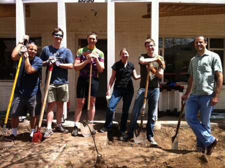

Come work for ALL the Boulder startups!
dojo4 co-creates incredible technology products with great customers. We've helped launch many of Boulder's thriving startups: Blipsnips, Everlater, Graphic.ly, RoundPegg, Snugg Home, lokalite, Splickit and many more.
We are growing our team of excellent professionals. We're hiring more people like us: cloud-deploying API-building HTTP experts; DOM-manipulating mobile-first JQuery-slinging front-end experts; and generalists who rock.
We build stuff.
Our culture is built on the premise that engineers thrive when they have challenging work, smart colleagues, good benefits, their choice of tools, a dojo4 hoodie, and respect. We'll treat you right.
You should have code in the public domain that we can read. You should like hacking on wicked projects. You should be able to own a sale, a project, a process, a server, a meeting, a relationship, an API, a bike. You should come by the shop and pair with us sometime! Email: hire_me@dojo4.com